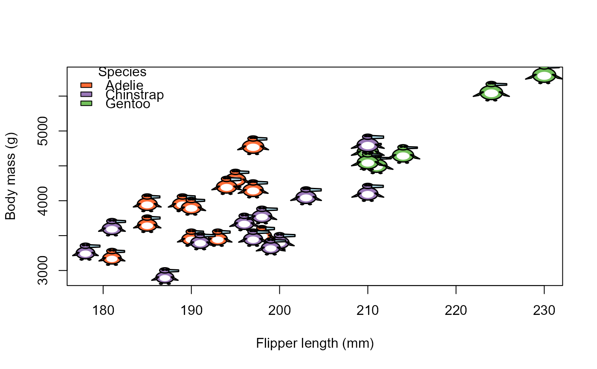
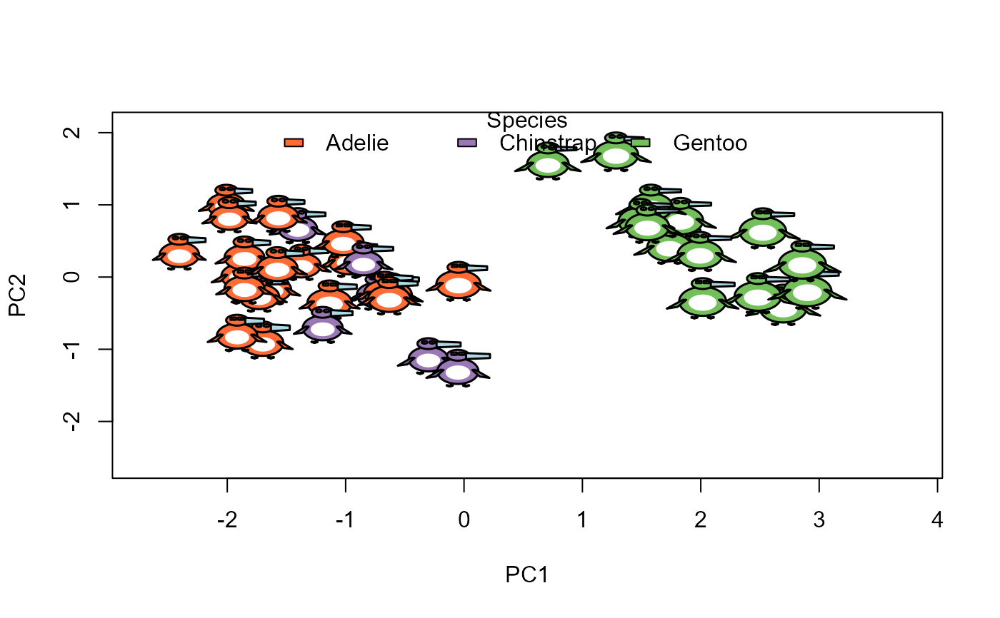

Draws a penguin glyph at each of the points (x, y) in an existing plot, in the
manner of graphics::points(). The features of each glyph are taken from the
corresponding row of data.
Usage
penguin_points(
x,
y,
data,
bill_len = "bill_len",
bill_dep = "bill_dep",
flipper_len = "flipper_len",
body_mass = "body_mass",
species = "species",
sex = "sex",
ref = NULL,
size = 0.4,
id = FALSE,
col = penguin_colors(),
cex.lab = 0.8,
...
)Arguments
- x, y
Coordinates of the glyphs, in the units of the current plot. Each should have one value for each row of
data.- data
Data frame with penguin measurements, one row for each point
- bill_len
Column name for bill length (default "bill_len")
- bill_dep
Column name for bill depth (default "bill_dep")
- flipper_len
Column name for flipper length (default "flipper_len")
- body_mass
Column name for body mass (default "body_mass")
- species
Column name for species (default "species")
- sex
Column name for sex (default "sex")
- ref
Reference data frame, whose ranges of the measurement variables determine how they are scaled. With the default,
NULL, the ranges are those of the full datasets::penguins data, so that a given penguin is drawn the same way in any subset. A variable not found there is scaled by its range indata. Useref = datato scale all variables relative to the rows being plotted.- size
Height of a glyph in inches, for a penguin with all measurements at the middle of their ranges
- id
Labels to display in the bodies of the glyphs:
TRUEto use the row names ofdata, or a vector of labels. The default,FALSE, gives no labels.- col
Named vector of body colors, with species as names. See
penguin_colors().- cex.lab
Character expansion for the
idlabels (default 0.8)- ...
Other arguments passed to
draw_penguin(), such aslwd
Details
Each continuous variable is normalized to a scale of 0.7 to 1.3, relative to
its range in ref. Rows with a missing x or y are not drawn. Other missing
values are shown as described in draw_penguin().
See also
penguin_legend() to add a species legend; penguin_glyphs() for a grid display.
Examples
data(penguins, package = "datasets")
set.seed(42)
peng <- penguins[sample(nrow(penguins), 30), ]
# Glyphs as the point symbols in a scatterplot
plot(body_mass ~ flipper_len, data = peng, type = "n",
xlab = "Flipper length (mm)", ylab = "Body mass (g)")
penguin_points(peng$flipper_len, peng$body_mass, peng)
penguin_legend("topleft", peng$species)

# In a plot of the first two principal components
peng <- na.omit(penguins)
pca <- prcomp(peng[, 3:6], scale. = TRUE)
show <- sample(nrow(peng), 40)
plot(pca$x[, 1:2], type = "n")
penguin_points(pca$x[show, 1], pca$x[show, 2], peng[show, ], size = 0.5)
penguin_legend("top", peng$species, horiz = TRUE)
